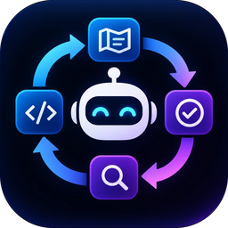
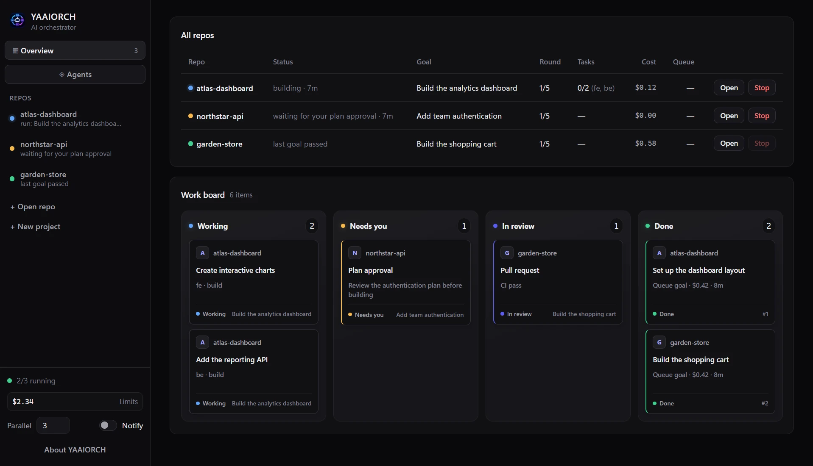
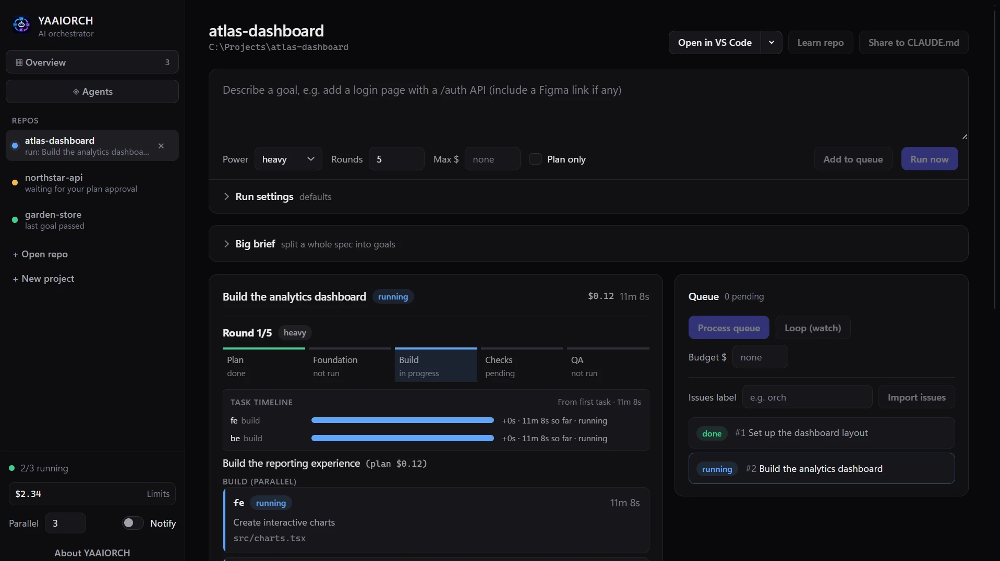
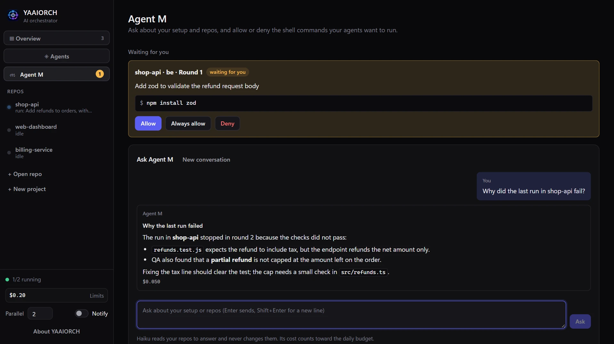
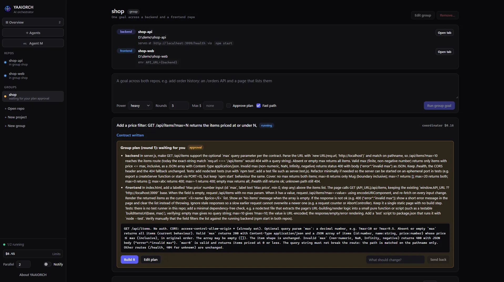

Parallel work, with clear ownership
An architect divides work into tasks with distinct file ownership. Foundation work runs first; independent implementation tasks can build in parallel.

YAAIORCHYAAIORCH gives AI agents a plan, your codebase, and a feedback loop. It keeps working until your project's checks pass and QA agrees.
Desktop app for Windows, macOS and Linux. The CLI runs wherever Node.js 20+ does. Needs Claude Code (installed and logged in) and git; the desktop app brings its own Node.js. The GitHub CLI is optional, for opening pull requests on GitHub.
Built for developers. YAAIORCH speeds up work you could do and review yourself. It doesn't replace knowing how: you write the checks it trusts, read the diffs it commits, and own what ships. If you can't judge the code, it can't either.

Follow parallel tasks, approvals and checks in the app as they happen.



YAAIORCH coordinates Claude Code agents, runs checks in the orchestrator, and sends failures back for another round. A confident answer alone is never a pass.
An architect divides work into tasks with distinct file ownership. Foundation work runs first; independent implementation tasks can build in parallel.
A read-only architect plans; implementers build; then your configured checks and a read-only QA agent verify the result. A failed check means the round fails, regardless of agent claims. Optional browser checks can detect common web apps after you approve their start command, giving QA screenshots and measurements from your app.
Name your slow suites (end-to-end, performance) as gate checks and they run like CI: in the orchestrator, after the ordinary checks pass, never by the agents. Agents learn a gate's name, not its command, so they can't tune code to it; a failure sends its output to the next round.
Git checkpoints, a commit per round, rollback, budgets, timeouts and stuck detection help you review and recover work. Protected paths, a secret scan and a file size limit before every commit, and an optional plan approval step keep unattended runs in bounds. Plans, contracts and reports read as short lists, so approving one takes a glance. Opt in to agent questions when you want to make decisions during a run.
Run the CLI, manage projects in the browser, or use the desktop app, which brings its own Node.js. Queue goals, work across repos, and bring your own Claude Code agents and skills.
Hand it a spec or a big brief. The architect splits it into goals that build on each other, the queue works
through them with retries and one budget, and a coverage check adds what is still missing. Start from an
empty folder with orch new. You still review what each goal commits before it ships.
Label a GitHub issue and YAAIORCH picks it up: it works on its own branch, opens a pull request that closes the issue, comments on progress, and tries to fix the pull request's CI when a check fails. You review the pull request before merging. Branches push to any git host; on GitLab, Bitbucket or Codeberg you open the pull request from a link.
Group a backend repo with a frontend repo and give them one goal. A coordinator writes the API contract and a goal for each side, both repos build in parallel against it, then the frontend is checked against the running backend with live calls to every case it relies on. A failure goes back to the side at fault; if it still fails, both repos are reset and the work is kept on a branch. Approve the contract first, stop at any time, or roll back both repos in one step.
Follow each round's phases, see parallel tasks overlap, and watch recent tool-request categories as agents work. Inspect task reports, Git diffs and browser screenshots, see token counts alongside cost, and replay past runs from history.
Browse built-in, user and project agents alongside discovered skills. Edit project agents or save a repo-local override without changing your global Claude Code definitions. Put a differently named specialist in any built-in role from the Agents page, while keeping the role's permissions and model, and turn skills or custom agents off for a repo that should not use them.
Turn it on and agents can ask to install a dependency or run a generator. Each command waits on the Agent M page, from every repo, for Allow, Always allow or Deny; nothing runs until you answer, and each repo's settings list what you always allowed, ready to remove. The same page has a chat that answers questions about your setup, MCP servers, queues and failed runs.
Real runs are graded by hidden tests the agents never see, counting false passes too. The November 2026 results: 95 runs, all passed, none falsely. A single direct attempt matched the full loop at about half the cost, so it now goes first. On cases with CI-style checks the agents can't run, every run failed its first round and usually fixed itself in the next, about $1 per goal.
Install and log in to Claude Code, then use the latest release or follow the source setup guide. Run YAAIORCH in a clean git repo and set a budget that fits the task.
See the full quick start# Check that your environment is ready $ orch doctor # Describe the change; cap the spend $ orch run "Add a health endpoint with a test" \ --power economy --max-cost 2 # Or hand it a whole brief and let it work through the goals $ orch split --brief-file BRIEF.md \ --start --max-cost-total 20
Open source, designed for review, and judged on coding tasks with hidden tests that the agents never see.